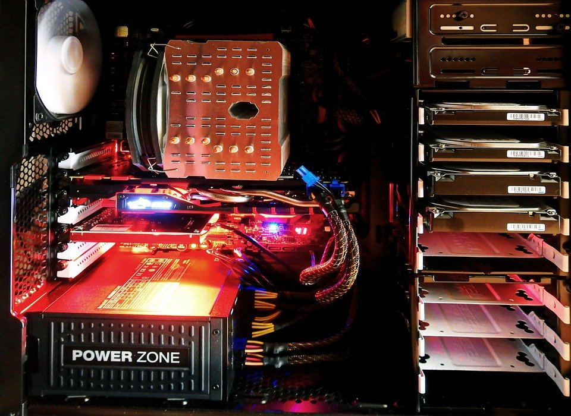

Hardware fails. Sometimes because of something you did and sometimes due to no fault of your own. No matter how careful you are. No matter how many precautions you take.
There are many causes of hardware failure. A corrupted hard drive. A fault in motherboard. A dead memory. Inadequate power supply.
Harddrive failures are the costliest of them all. Although a hard disk is one of the cheapest parts of a computer and yet it is one that is most precious to you. After all, all your data, the hard work of so many years is contained inside the hard disk. You can replace the motherborad. Buy your self a new RAM. Fix the CPU fan. But once the data in the hard disk is lost it can be very difficult to get it back.
Data backup and archival is something that you should be doing a regular basis. There are many strategies for data backup.
Although they are the most convenient method of the 3 strategies cloud backups can get expensive in the long term. As the volume and the access to your data increases your costs tend to increase. 
To reduce the costs of your cloud backups you can set up your own FTP server. Although the initial costs will be high over a period of time you’ll get both the convenience of online backups as well as cost reductions of an in house solution. But to keep such a system running you’d have to spend maintenance costs which depending upon the complexity of your requirements might be minimal or huge. It is not advisable to run an in house server unless you have the required technical expertise.
Cloud backups and setting up your own NFS servers are both examples of online data backups. Where your storage is always available and you can access your data as long as you’re connected to the network. But what if you don’t have a network access? Or what if the network access is too slow for the volume of data you need?
In that case offline backups are the best solution. A physical harddrive is one of the most effective investments you can make to keep your data safe. You can use the hard disks in a couple of ways. You can either
The effort required to back up the data is minimal. All you need to do is connect the disk and run the backup program on your computer.
It is also a good idea to set a life expectancy to each of the disks that you use on your workstations. For example you may retire a disk after 3 years or after 5 years. Retiring a disk does not mean that you throw it away. It simply means that you no longer write on to this disk and keep it as a read only archive. Something that can be used to lookup an old copy of an important file.
A harddrive that is not being written to/ not being modified can last for decades. Long enough time for you to extract all the value you can out of your data. After which point you may redeploy these systems into computing tasks that don’t require you to store any sensitive data. Or example customer support machines where your staff has to respond to inquires from your customer.
Offline standby systems
Data loss is one cause of concern when it comes to dealing with disk failures. Another problem is loss of equipment for the duration it takes to restore the original workstation.
There is a better way. By creating ready to boot harddrives you can have multiple copies of a running operating system that can be integrated in any workstation. You can switch harddrives when one fails. You can retire old hard drives early. You can set up new machines quickly and reduce the total cost of ownership of your IT systems. So that you can expand your IT infrastructure on demand.
Sparvk aero can help you create offline “available” systems so your production never stops.